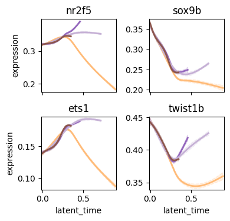

Visualize regulon activity and expression dynamics#
Library import#
import decoupler as dc
import numpy as np
import pandas as pd
import matplotlib.pyplot as plt
import cellrank as cr
import scanpy as sc
from rgv_tools import DATA_DIR, FIG_DIR
General settings#
plt.rcParams["svg.fonttype"] = "none"
Constants#
DATASET = "zebrafish"
SAVE_DATA = True
SAVE_FIGURE = True
if SAVE_DATA:
(DATA_DIR / DATASET / "processed").mkdir(parents=True, exist_ok=True)
if SAVE_FIGURE:
(FIG_DIR / DATASET).mkdir(parents=True, exist_ok=True)
TERMINAL_STATES = [
"mNC_head_mesenchymal",
"mNC_arch2",
"mNC_hox34",
"Pigment",
]
genes = ["nr2f5", "sox9b", "twist1b", "ets1"]
Define functions#
def min_max_scaling(data):
"""Compute min and max values for each feature."""
min_vals = np.min(data, axis=0)
max_vals = np.max(data, axis=0)
# Perform min-max scaling
scaled_data = (data - min_vals) / (max_vals - min_vals)
return scaled_data
Data loading#
adata = sc.read_h5ad(DATA_DIR / DATASET / "processed" / "adata_preprocessed.h5ad")
Calculate activity#
regulons = (
adata.uns["skeleton"]
.copy()
.reset_index()
.melt(id_vars="index", var_name="target", value_name="weight")
.rename(columns={"index": "source"})
)
regulons = regulons[regulons["weight"] != 0].reset_index(drop=True)
dc.mt.aucell(adata, layer="Ms", net=regulons, tmin=0)
activity = adata.obsm["score_aucell"].copy()
dc.mt.aucell(adata, layer="Ms", net=regulons, tmin=0, n_up=np.floor(988 * 0.50)) # considering the small regulon
activity_50 = adata.obsm["score_aucell"].copy()
connectivity = adata.uns["skeleton"].loc[activity.columns, :].sum(1)
activity_merge = []
for i in connectivity.index:
if connectivity[i] < 50: # if regulon gene less than 50, used top 50% genes
activity_merge.append(activity_50[i])
else:
activity_merge.append(activity[i])
activity = adata.obsm["score_aucell"].copy()
activity = pd.DataFrame(np.array(activity_merge), index=connectivity.index, columns=activity.index)
adata.obsm["score_aucell"] = activity.T.copy()
activity = pd.DataFrame(np.zeros(adata.shape), index=adata.obs_names, columns=adata.var_names)
activity.loc[:, adata.obsm["score_aucell"].columns] = adata.obsm["score_aucell"].values.copy()
adata.layers["activity"] = np.array(activity)
GAM fitting#
pk = cr.kernels.PseudotimeKernel(adata, time_key="latent_time").compute_transition_matrix()
estimator = cr.estimators.GPCCA(pk)
estimator.compute_macrostates(n_states=7, n_cells=30, cluster_key="cell_type")
estimator.set_terminal_states(TERMINAL_STATES)
estimator.compute_fate_probabilities()
estimator.plot_fate_probabilities(same_plot=False)
2025-10-25 18:34:38 | [INFO] Using pre-computed Schur decomposition
[0]PETSC ERROR: ------------------------------------------------------------------------
[0]PETSC ERROR: Caught signal number 13 Broken Pipe: Likely while reading or writing to a socket
[0]PETSC ERROR: Try option -start_in_debugger or -on_error_attach_debugger
[0]PETSC ERROR: or see https://petsc.org/release/faq/#valgrind and https://petsc.org/release/faq/
[0]PETSC ERROR: configure using --with-debugging=yes, recompile, link, and run
[0]PETSC ERROR: to get more information on the crash.
Abort(59) on node 0 (rank 0 in comm 0): application called MPI_Abort(MPI_COMM_WORLD, 59) - process 0
model = cr.models.GAMR(adata, n_knots=6, smoothing_penalty=10.0)
2025-10-25 18:35:11 | [INFO] cffi mode is CFFI_MODE.ANY
2025-10-25 18:35:11 | [INFO] R home found: /usr/lib64/R
2025-10-25 18:35:11 | [INFO] R library path: :/home/icb/weixu.wang/miniconda3/lib
2025-10-25 18:35:11 | [INFO] LD_LIBRARY_PATH: :/home/icb/weixu.wang/miniconda3/lib
2025-10-25 18:35:12 | [INFO] Default options to initialize R: rpy2, --quiet, --no-save
/home/icb/weixu.wang/miniconda3/envs/regvelo-py310/lib/python3.10/site-packages/rpy2/rinterface/__init__.py:1211: UserWarning: Environment variable "BASH_FUNC_which%%" redefined by R and overriding existing variable. Current: "() { ( alias;
eval ${which_declare} ) | /usr/bin/which --tty-only --read-alias --read-functions --show-tilde --show-dot $@
}", R: "() { ( alias; eval ${which_declare} ) | /usr/bin/which --tty-only --read-alias --read-functions --show-tilde --show-dot $@}"
warnings.warn(
sh: which: line 1: syntax error: unexpected end of file
sh: error importing function definition for `which'
sh: which: line 1: syntax error: unexpected end of file
sh: error importing function definition for `which'
/home/icb/weixu.wang/miniconda3/envs/regvelo-py310/lib/python3.10/site-packages/rpy2/rinterface/__init__.py:1211: UserWarning: Environment variable "R_SESSION_TMPDIR" redefined by R and overriding existing variable. Current: "/tmp/RtmpTkUncP", R: "/tmp/Rtmp4DJgTO"
warnings.warn(
2025-10-25 18:35:14 | [INFO] R is already initialized. No need to initialize.
Visualize activity#
for g in ["nr2f5", "twist1b", "sox9b", "ets1"]:
adata.obs["activity"] = adata.obsm["score_aucell"][g]
umap = adata.obsm["X_umap"]
activity = adata.obs["activity"]
fig, ax = plt.subplots(figsize=(6, 3.5))
# Plot all cells colored by "likelihood"
scc = ax.scatter(
umap[:, 0],
umap[:, 1],
c=activity,
cmap="YlOrRd",
# s=20,
edgecolors="none",
alpha=0.8,
s=80,
)
# Overlay highlighted cells (larger, outlined)
# Add colorbar
plt.colorbar(scc, ax=ax, label="Likelihood")
ax.set_xlabel("UMAP1")
ax.set_ylabel("UMAP2")
ax.axis("off")
plt.tight_layout()
plt.show()
if SAVE_FIGURE:
fig.savefig(FIG_DIR / DATASET / f"{g}_activity.svg", format="svg", transparent=True, bbox_inches="tight")

cr.pl.gene_trends(
adata,
model=model,
data_key="activity",
genes=["nr2f5", "sox9b", "ets1", "twist1b"],
same_plot=True,
ncols=2,
time_key="latent_time",
hide_cells=True,
weight_threshold=(1e-3, 1e-3),
figsize=(4, 4),
legend_loc="none",
)

Plot regulatory circut dynamics#
refit using velocity kernel#
vk = cr.kernels.VelocityKernel(adata)
vk.compute_transition_matrix()
ck = cr.kernels.ConnectivityKernel(adata).compute_transition_matrix()
kernel = 0.8 * vk + 0.2 * ck
[0]PETSC ERROR: ------------------------------------------------------------------------
[0]PETSC ERROR: Caught signal number 13 Broken Pipe: Likely while reading or writing to a socket
[0]PETSC ERROR: Try option -start_in_debugger or -on_error_attach_debugger
[0]PETSC ERROR: or see https://petsc.org/release/faq/#valgrind and https://petsc.org/release/faq/
[0]PETSC ERROR: configure using --with-debugging=yes, recompile, link, and run
[0]PETSC ERROR: to get more information on the crash.
[0]PETSC ERROR: ------------------------------------------------------------------------
[0]PETSC ERROR: Caught signal number 13 Broken Pipe: Likely while reading or writing to a socket
[0]PETSC ERROR: Try option -start_in_debugger or -on_error_attach_debugger
[0]PETSC ERROR: or see https://petsc.org/release/faq/#valgrind and https://petsc.org/release/faq/
[0]PETSC ERROR: configure using --with-debugging=yes, recompile, link, and run
[0]PETSC ERROR: to get more information on the crash.
estimator = cr.estimators.GPCCA(kernel)
estimator.compute_macrostates(n_states=7, n_cells=30, cluster_key="cell_type")
estimator.set_terminal_states(TERMINAL_STATES)
2025-10-25 18:42:32 | [INFO] Using pre-computed Schur decomposition
GPCCA[kernel=(0.8 * VelocityKernel[n=697] + 0.2 * ConnectivityKernel[n=697]), initial_states=None, terminal_states=['Pigment', 'mNC_arch2', 'mNC_head_mesenchymal', 'mNC_hox34']]
estimator.compute_fate_probabilities()
estimator.plot_fate_probabilities(same_plot=False)
[0]PETSC ERROR: ------------------------------------------------------------------------
[0]PETSC ERROR: Caught signal number 13 Broken Pipe: Likely while reading or writing to a socket
[0]PETSC ERROR: Try option -start_in_debugger or -on_error_attach_debugger
[0]PETSC ERROR: or see https://petsc.org/release/faq/#valgrind and https://petsc.org/release/faq/
[0]PETSC ERROR: configure using --with-debugging=yes, recompile, link, and run
[0]PETSC ERROR: to get more information on the crash.
Plot following regulatory circut#
- nr2f5 -> serpinh1b
- nr2f5 -> alcama
display = pd.DataFrame(np.zeros(adata.shape), index=adata.obs_names, columns=adata.var_names)
display.loc[:, "nr2f5"] = np.array(adata[:, "nr2f5"].layers["Ms"].reshape(-1))
display.loc[:, ["serpinh1b", "alcama"]] = np.array(adata[:, ["serpinh1b", "alcama"]].layers["Mu"])
adata.layers["display"] = np.array(display)
model = cr.models.GAMR(adata, n_knots=10, smoothing_penalty=10.0)
cr.pl.gene_trends(
adata,
model=model,
lineages="mNC_head_mesenchymal",
data_key="display",
genes=["nr2f5", "serpinh1b", "alcama"],
same_plot=True,
ncols=3,
time_key="latent_time",
hide_cells=True,
weight_threshold=(1e-3, 1e-3),
legend_loc="none",
sharey=True,
figsize=(6, 2),
)
Plot following regulatory circut#
- sox9b -> pdgfra
- sox9b -> zfhx3
display = pd.DataFrame(np.zeros(adata.shape), index=adata.obs_names, columns=adata.var_names)
display.loc[:, "sox9b"] = np.array(adata[:, "sox9b"].layers["Ms"].reshape(-1))
display.loc[:, ["pdgfra", "zfhx3"]] = np.array(adata[:, ["pdgfra", "zfhx3"]].layers["Mu"])
adata.layers["display"] = np.array(display)
cr.pl.gene_trends(
adata,
model=model,
lineages="mNC_head_mesenchymal",
data_key="display",
genes=["sox9b", "pdgfra", "zfhx3"],
same_plot=True,
ncols=3,
time_key="latent_time",
hide_cells=True,
weight_threshold=(1e-3, 1e-3),
legend_loc="none",
sharey=True,
figsize=(6, 2),
)
Plot following regulatory circut#
- ets1 -> plpp3
- ets1 -> ccn2a
display = pd.DataFrame(np.zeros(adata.shape), index=adata.obs_names, columns=adata.var_names)
display.loc[:, "ets1"] = np.array(adata[:, "ets1"].layers["Ms"].reshape(-1))
display.loc[:, ["plpp3", "ccn2a"]] = np.array(adata[:, ["plpp3", "ccn2a"]].layers["Mu"])
adata.layers["display"] = np.array(display)
cr.pl.gene_trends(
adata,
model=model,
lineages="mNC_head_mesenchymal",
data_key="display",
genes=["ets1", "plpp3", "ccn2a"],
same_plot=True,
ncols=3,
time_key="latent_time",
hide_cells=True,
weight_threshold=(1e-3, 1e-3),
legend_loc="none",
sharey=True,
figsize=(6, 2),
)
Plot following regulatory circut#
- twist1b -> cbfb
- twist1b -> wee1
display = pd.DataFrame(np.zeros(adata.shape), index=adata.obs_names, columns=adata.var_names)
display.loc[:, "twist1b"] = np.array(adata[:, "twist1b"].layers["Ms"].reshape(-1))
display.loc[:, ["cbfb", "wee1"]] = np.array(adata[:, ["cbfb", "wee1"]].layers["Mu"])
adata.layers["display"] = np.array(display)
cr.pl.gene_trends(
adata,
model=model,
lineages="mNC_head_mesenchymal",
data_key="display",
genes=["twist1b", "cbfb", "wee1"],
same_plot=True,
ncols=3,
time_key="latent_time",
hide_cells=True,
weight_threshold=(1e-3, 1e-3),
legend_loc="none",
sharey=True,
figsize=(6, 2),
)